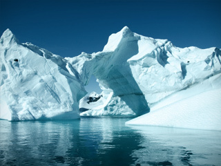
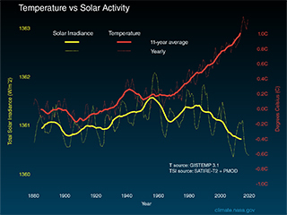
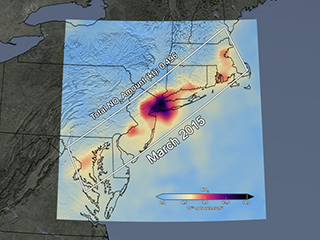
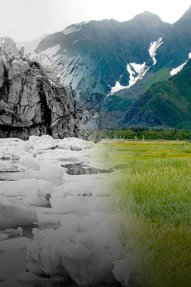

Curbing dangerous climate change requires very deep cuts in emissions, as well as the use of alternatives to fossil fuels worldwide
. The good news is that we’ve started a turnaround: CO2 emissions in the United States actually decreased from 2005 to 2014,
thanks in part to new, energy-efficient technology and the use of cleaner fuels. And scientists continue to develop new ways
to modernize power plants, generate cleaner electricity, and burn less gasoline while we drive. The challenge is to be sure
these solutions are put to use and widely adopted.
More frequent and severe weather. Higher temperatures are worsening many types of disasters, including storms, heat waves,
floods, and droughts. ...
-Higher death rates. ...
-Dirtier air. ...
-Higher wildlife extinction rates. ...
-More acidic oceans. ...
-Higher sea levels.
Higher death rates
Today's scientists point to climate change as "the biggest global health threat of the 21st century." It's a threat that
impacts all of us—especially children, the elderly, low-income communities, and minorities—and in a variety of direct
and indirect ways. As temperatures spike, so does the incidence of illness, emergency room visits, and death.
"There are more hot days in places where people aren't used to it," Haq says. "They don't have air-conditioning or
can't afford it. One or two days isn't a big deal. But four days straight where temperatures don't go down, even at
night, leads to severe health consequences." In the United States, hundreds of heat-related deaths occur each year
due to direct impacts and the indirect effects of heat-exacerbated, life-threatening illnesses, such as heat exhaustion,
heatstroke, and cardiovascular and kidney diseases. Indeed, extreme heat kills more Americans each year, on average, than
hurricanes, tornadoes, floods, and lightning combined.
Dirtier air
Rising temperatures also worsen air pollution by increasing ground level ozone, which is created when pollution from cars,
factories, and other sources react to sunlight and heat. Ground-level ozone is the main component of smog, and the hotter
things get, the more of it we have. Dirtier air is linked to higher hospital admission rates and higher death rates for asthmatics.
It worsens the health of people suffering from cardiac or pulmonary disease. And warmer temperatures also significantly increase
airborne pollen, which is bad news for those who suffer from hay fever and other allergies.
Higher wildlife extinction rates
As humans, we face a host of challenges, but we're certainly not the only ones catching heat. As land and sea undergo
rapid changes, the animals that inhabit them are doomed to disappear if they don't adapt quickly enough. Some will make
it, and some won't. According to the Intergovernmental Panel on Climate Change's 2014 assessment, many land, freshwater,
and ocean species are shifting their geographic ranges to cooler climes or higher altitudes, in an attempt to escape warming.
They're changing seasonal behaviors and traditional migration patterns, too. And yet many still face "increased extinction
risk due to climate change." Indeed, a 2015 study showed that vertebrate species—animals with backbones, like fish, birds,
mammals, amphibians, and reptiles—are disappearing 114 times faster than they should be, a phenomenon that has been linked
to climate change, pollution, and deforestation.
More acidic oceans
The earth's marine ecosystems are under pressure as a result of climate change. Oceans are becoming more acidic, due in
large part to their absorption of some of our excess emissions. As this acidification accelerates, it poses a serious threat
to underwater life, particularly creatures with calcium carbonate shells or skeletons, including mollusks, crabs, and corals.
This can have a huge impact on shellfisheries. Indeed, as of 2015, acidification is believed to have cost the Pacific Northwest
oyster industry nearly $110 million. Coastal communities in 15 states that depend on the $1 billion nationwide annual harvest of
oysters, clams, and other shelled mollusks face similar long-term economic risks.
Higher sea levels
The polar regions are particularly vulnerable to a warming atmosphere. Average temperatures in the Arctic are rising twice as fast
as they are elsewhere on earth, and the world's ice sheets are melting fast. This not only has grave consequences for the region's
people, wildlife, and plants; its most serious impact may be on rising sea levels. By 2100, it's estimated our oceans will be one
to four feet higher, threatening coastal systems and low-lying areas, including entire island nations and the world's largest cities,
including New York, Los Angeles, and Miami as well as Mumbai, Sydney, and Rio de Janeiro.



